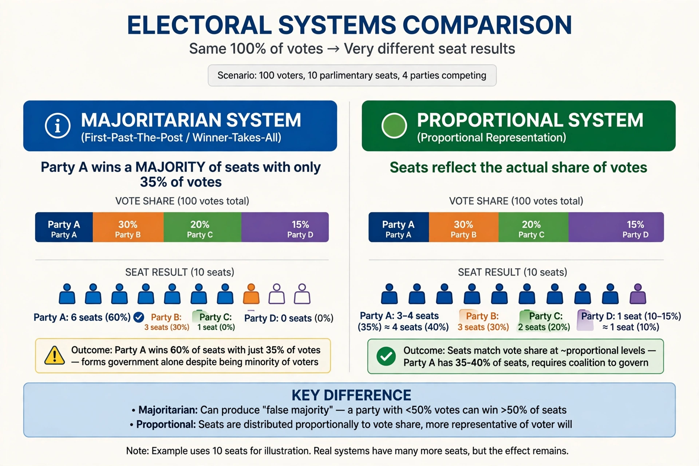

Majoritarian representation is a principle of electoral systems under which the winning candidate or party in each district takes all of the representation for that district, and seats are not allocated in proportion to votes cast. It is one of the two broad families of electoral systems, contrasted with proportional representation.
Under majoritarian systems, elections are usually held in single-member districts. The candidate with the most votes in each district wins the seat, and all other votes cast in the district contribute nothing to the final composition of the legislature. Common variants include first-past-the-post, the two-round system, the alternative vote, and block voting.
Supporters argue that majoritarian systems tend to produce clear winners, stable single-party governments, and a strong link between a representative and a specific geographic constituency. Because a party usually needs broad national support to win a majority of seats, such systems can encourage moderate, "big tent" parties.
Critics point out that majoritarian systems can produce highly disproportional results: a party may win a majority of seats with well under half of the popular vote, while parties with significant but geographically dispersed support may win few or no seats. This can lead to wasted votes and contested perceptions of legitimacy.